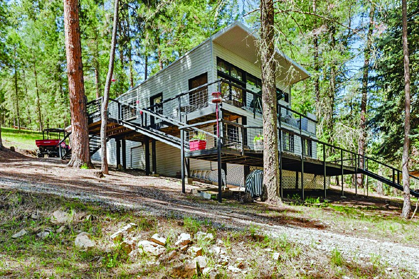
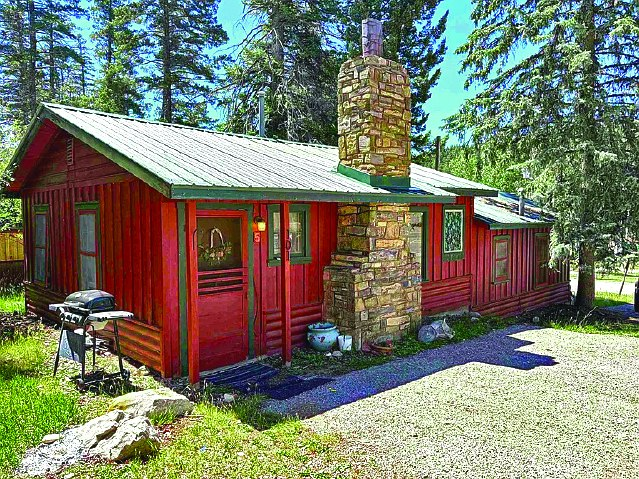
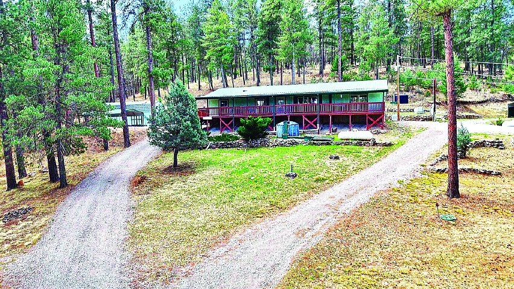
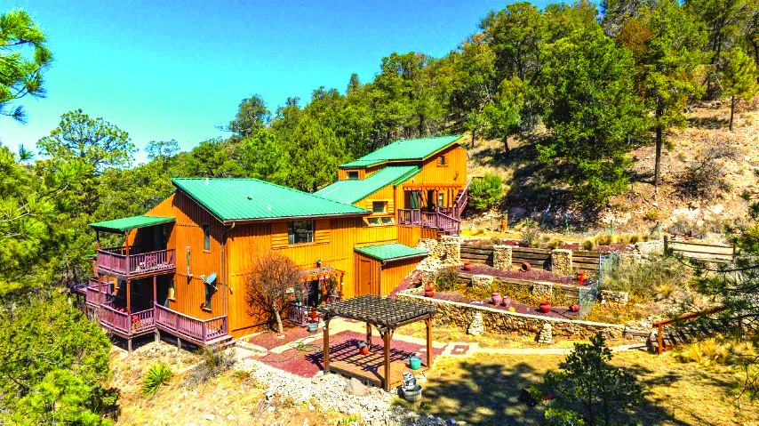
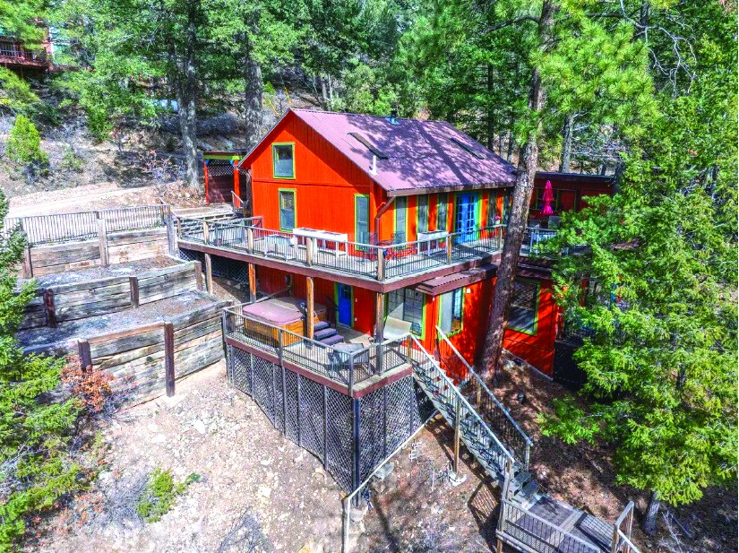

$379,000
3 Bedroom Property in Cloudcroft
3 bd · 2 ba
Cloudcroft, New Mexico
MLS #172501
$379,000
3 Bedroom Property in Cloudcroft
3 bd · 2 ba
Cloudcroft, New Mexico
MLS #172501

66 Will Scarlet
$375,500
| Price | $375,500 |
|---|---|
| Bedrooms | 3 |
| Bathrooms | 2 |
| Living area | 800 sq ft |
| Land | 3.45 acres |
| Address | 66 Will Scarlet |
| MLS # | 171319 |
| Listed by | Future Real Estate |
| Print edition | October 2026 Otero County Edition, page 10 |
About this property
Mountain cabin on 3.45 acres bordering the National Forest. This 3-bed, 2-bath home offers an open-concept interior, approximately 800 sq ft of wraparound decks offering scenic and wildlife views, and an attached storage/workshop. Call Kara Cochran 575-921-5018 for more information. MLS #171319
Interested in this property?
Office phone: 575-415-4039
Future Real Estate
Please contact the listing agent or company directly. The Real Estate Roundup is a publisher and does not show or sell properties.
Listing details and photo reproduced from the October 2026 print edition of The Real Estate Roundup (page 10), as printed. Prices and availability can change after publication — confirm with the listing agent.
More Homes
$379,000
3 Bedroom Property in Cloudcroft
3 bd · 2 ba
Cloudcroft, New Mexico
MLS #172501
 $382,000
10 Red Mountain Dr. High Rolls Mountain Park
5 bd · 2 ba
High Rolls, New Mexico
MLS #172908
$382,000
10 Red Mountain Dr. High Rolls Mountain Park
5 bd · 2 ba
High Rolls, New Mexico
MLS #172908

$395,000 5 Bedroom Property 5 bd MLS #172830
$354,000 18 Carpenter Ln 3 bd · 2 ba MLS #172420
$399,000 4 Bedroom 2.67 Acre Property 4 bd · 2.67 acres MLS #172318
$399,000 2 Bedroom Property 2 bd · 1.75 ba MLS #173084